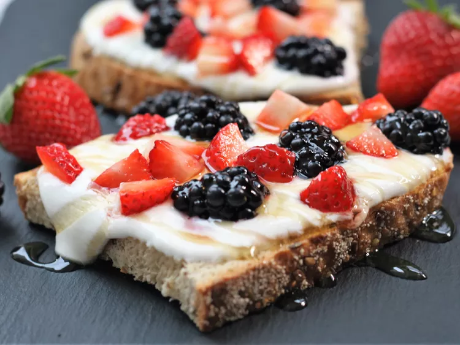

Cottage Cheese Toast

Description
Give your breakfast an upgrade with this healthy and filling berry and cottage cheese toast
Use whatever berries you have on hand, but my favorites are strawberries and blackberries. Adjust the honey to your desired level of sweetness.
Ingredients
- 1 cup low-fat cottage cheese
- 4 slices crusty Italian bread
- 1/2 cup chopped strawberries
- 1/2 cup blackberries, halved
- 4 tablespoons honey, or as needed
Steps
- Place cottage cheese into the bowl of a food processor or blender. Blend until smooth, about 1 minute, scraping down the sides after 30 seconds.
- Toast bread slices. Top each slice with 1/4 cup cottage cheese, then top with 1/4 cup mixed berries. Drizzle each slice with 1 tablespoon honey, or more to taste.
Home